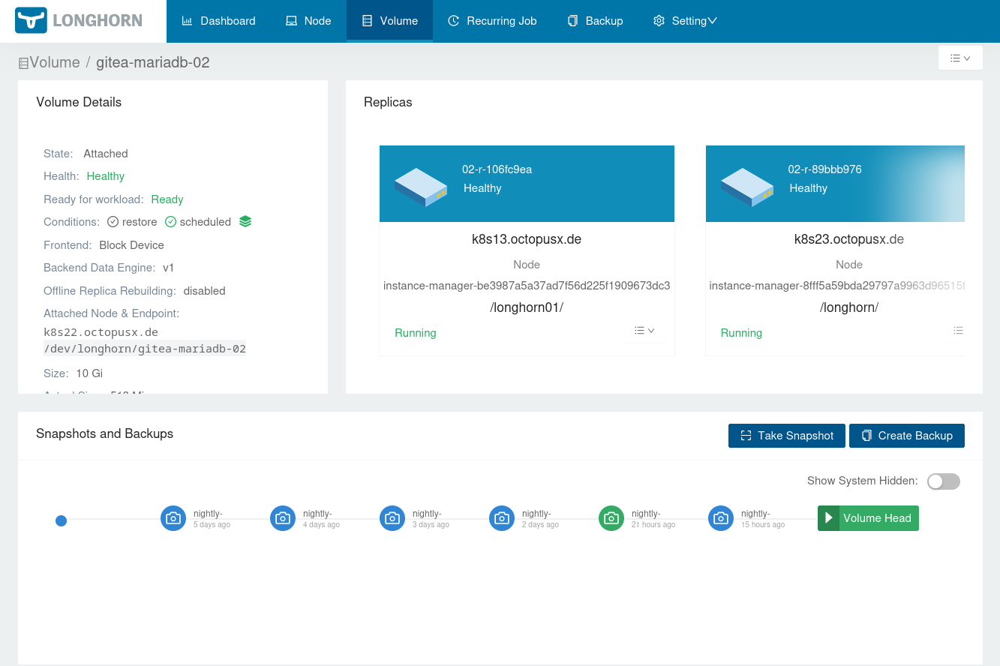
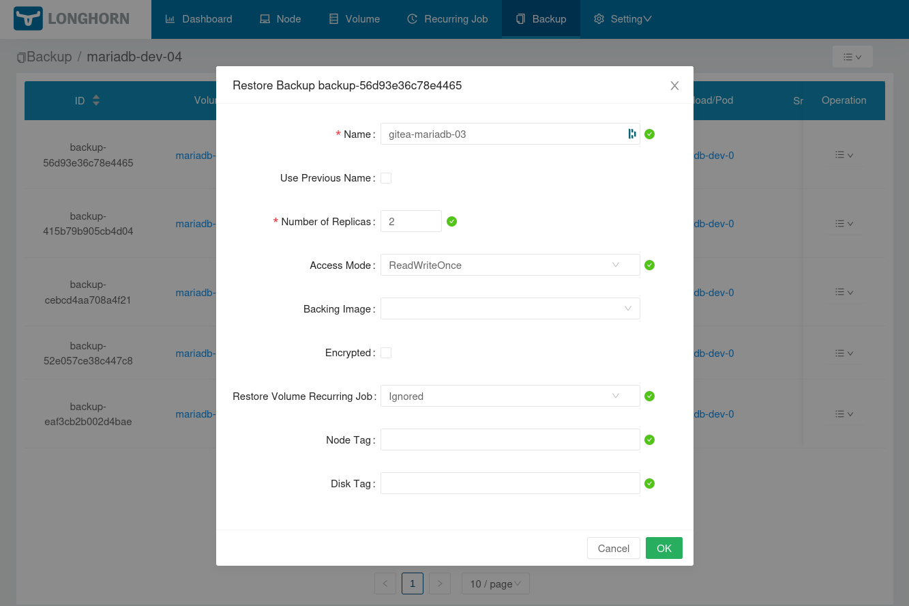
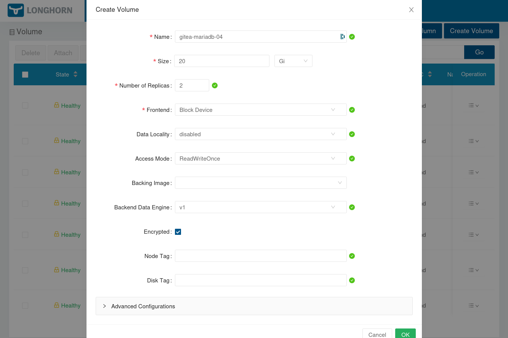
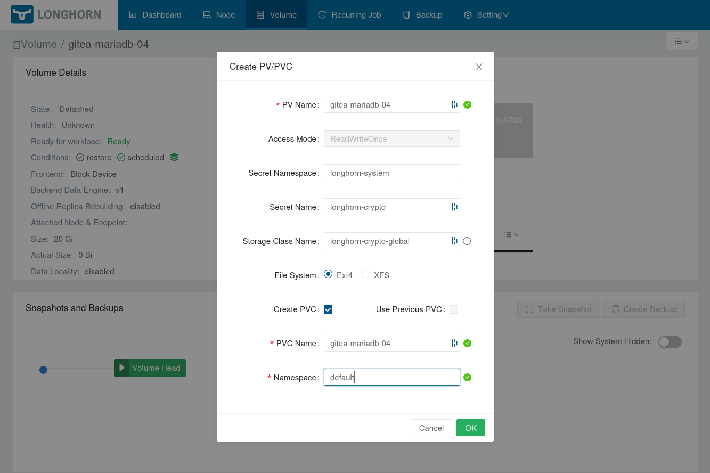
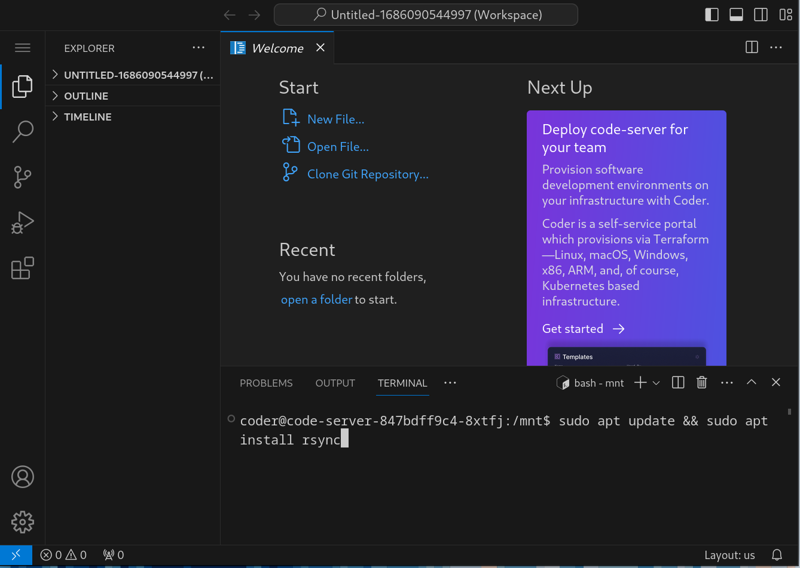

7 minutes
Encrypted Volumes
When I started self hosting services I was afraid of storing my non-sensitive data encrypted. As I played with different kinds of hardware setups, hypervisors and hosting strategies I have made a decision to not encrypt the volumes attatched to my docker containers. This was so that when I inevitably break stuff, I can easily still access everything and move it to a new home where it can be used again.
After many iterations and failed attempts at having a sensible strategy for storing the data of my stateful applications I ended up sticking with Longhorn, which has proven to be reliable and flexible yet simple enough to fit my needs. For more information on how I use it I recommend checking out my previous posts: https://blog.octopusx.de/posts/backup_restore/ and https://blog.octopusx.de/posts/homelab_ha_edition/.
Building trust
Having been using Longhorn now for a good few years, surviving a few cluster and Longhorn version upgrades I decided it is time to start encrypting my volumes again. This is particularly important now that I have an offsite backup. Thankfully Longorn has a built in encryption mechanism that can be used to decrypt volumes on the fly while mounting them to their respective containers for use.
The setup
We will be following Longhorn’s official guide to set this up: https://longhorn.io/docs/1.5.1/advanced-resources/security/volume-encryption/
It states that we need the dm_crypt kernel module loaded and cryptsetup installed on the worker nodes.
I can see that I have cryptsetup on my Ubuntu 22.04 server workers:
~ ❯ sudo apt search cryptsetup 5s user@worker01
Sorting... Done
Full Text Search... Done
cryptsetup/jammy-updates,now 2:2.4.3-1ubuntu1.1 amd64 [installed,automatic]
disk encryption support - startup scripts
However the dm-crypt kernel module is nowhere to be seen. Since cryptsetup seems to be working fine though, let’s see if it is indeed needed or if it is a soft requirement…
lsmod | rg crypt
# (sound of crickets, but in text form...)
First thing we want to create is the secret that will be used by longhorn to encrypt and decrypt all the volumes. It has to look like this:
---
apiVersion: v1
kind: Secret
metadata:
name: longhorn-crypto
namespace: longhorn-system
stringData:
CRYPTO_KEY_VALUE: "super-secret-extra-long-key"
CRYPTO_KEY_PROVIDER: "secret"
CRYPTO_KEY_CIPHER: "aes-xts-plain64"
CRYPTO_KEY_HASH: "sha256"
CRYPTO_KEY_SIZE: "256"
CRYPTO_PBKDF: "argon2i"
We want to create this secret manually by the means of running kubectl apply -f <filename>, although I recommend storing the CRYPTO_KEY_VALUE in a password manager as a backup. I was wandering as to the length of this key too but didn’t imediately find any recommendations, so I chose a 40 character random string for now.
Also, bear in mind, that whenever you restore an encrypted volume from a backup to a new cluster you will need to re-create this secret, otherwise the data on your volumes won’t be readable. I have created this secret on both my production cluster as well as my backup cluster already to enable me to test the backup/restore procedure.
Next we need to create a new storage class, which we will use when creating encrypted volumes, new and restored from a backup alike:
kind: StorageClass
apiVersion: storage.k8s.io/v1
metadata:
name: longhorn-crypto-global
provisioner: driver.longhorn.io
allowVolumeExpansion: true
parameters:
numberOfReplicas: "2"
staleReplicaTimeout: "2880" # 48 hours in minutes
fromBackup: ""
encrypted: "true"
# global secret that contains the encryption key that will be used for all volumes
csi.storage.k8s.io/provisioner-secret-name: "longhorn-crypto"
csi.storage.k8s.io/provisioner-secret-namespace: "longhorn-system"
csi.storage.k8s.io/node-publish-secret-name: "longhorn-crypto"
csi.storage.k8s.io/node-publish-secret-namespace: "longhorn-system"
csi.storage.k8s.io/node-stage-secret-name: "longhorn-crypto"
csi.storage.k8s.io/node-stage-secret-namespace: "longhorn-system"
You can see in the above example that they refer to our secret name. This way of creating volumes means that they all are encrypted with the same key. If you want to have a different key for each volume, the official Longhorn guide tells you how to do that too.
Conversion to encrypted volumes
There is no automated way to convert an unencrypted volume into an encrypted one in Longhorn as far as I know. In order to achieve this we will have to resort to a few tricks that will allow us to migrate the data from the old unencrypted volumes to the new encrypted ones.
The first thing I tried, thinking that I am cheeky, was to first make a backup of the Longhorn volume that I wish to have encrypted, then restore that backup with the “encrypted” flag selected. This however resulted in errors when trying to mount such a volume. It was worth a shot though, it would make our life super easy if this worked!
So, off to go be more tricksy. Whenever I need to perform any manipulation on data inside my K8S cluster volumes, I usually temporarily attatch said volume to my VSCode server container. This gives me a convenient way to move data around using the built-in VSCode terminal and edit any files then and there if necessary. This turned out the be the way to go.
Create a backup
First I would go and create an ad-hoc backup of the volume I am trying to migrate. This way I can migrate the current state of the data on each volume without interrupting the opration of the application using said volume.

Restore to a new unencrypted volume
Now that we have fresh data in our backup system, we can go ahead and use the restore feature while creating a brand new unencrypted volume. This will allow us to have a live copy of the latest data that we can subsequently mount to our VSCode container, again, without interupting the related application.

Create a new encrypted volume
Then I go ahead and create a new encrypted volume. This will be the target volume that we will be eventually attatching to the container once all the data is migrated.

Attatch the new volumes to VSCode
In order to attatch the 2 volumes we just crated they first have to have PVs and PVCs created. This does not automatically happen when you create a new volume either fresh of from a backup. That is unless you’re restoring a backup and select the “use previous PVC name”, which we do not want to do because that PVC still exists and is attatched to the original container.

Once you create the PVCs we go to the VSCode helm chart and modify it, adding the extra two volume mounts.
extraVolumeMounts:
# Source volume, restored from backup
- name: dev-01
mountPath: /mnt/gitea-mariadb-02
existingClaim: gitea-mariadb-02
readOnly: false
# Destination encrypted volume, freshly created
- name: dev-02
mountPath: /mnt/gitea-mariadb-04
existingClaim: gitea-mariadb-04
readOnly: false
Then apply the changes so that they take effect:
helm upgrade vscode .
Data sync
Our vanilla VSCode container is missing rsync, which is easily remedied. CTRL+j brings up the terminal and off we go:
sudo apt update
sudo apt install rsync
Just like that:

Once that is done, run a sync command to copy all of our data from the backup volume and into the new encrypted volume:
sudo rsync -avxHAX --info=progress2 --info=name0 /mnt/gitea-mariadb-02/* /mnt/gitea-mariadb-04
Once this is done you can do a quick sanity check, make sure that both the volumes have the same weight before moving on:
du -sh /mnt/gitea-mariadb-02
du -sh /mnt/gitea-mariadb-04
Now we are ready to detatch these volumes from VSCode and attach them to our target workload. I usually do this by rolling back the last change to VSCode:
helm rollback code-server 0
Do the switcheroo
The final step is now to swap the volumes from beneath our container. Most helm charts will have a persistence section in the Values file, where we can point it to our new volume using the existingClaim parameter. Here is an example from my mariadb helm chart (imported from Bitnami repo):
mariadb:
primary:
persistence:
existingClaim: gitea-mariadb-04
Then we upgrade out deployment and fingers crossed we end up with a working deployment:
helm upgrade gitea-mariadb .
One caveat here is that sometimes (and it depends on how the helm chart is structured) if you are using a statefulSet K8S deployment type, it will complain that such changes are not allowed on an sts and the deployment will fail. To remedy this you can modify the sts directly using kubectl edit command, replace just the volume name in its config, wait for the changes to take place, then run the helm upgrade. This should help you roll out this change without having to reinstalling the whole deployment.
Epilogue
It definitely took me a few good sessions of manual tinkering to migrate all of my data to encrypted volumes. Some of them have been running for a few weeks now and I haven’t had any problems with them so far. Evident lack of dm-crypt kernel module on ubuntu 22.04 was apparently also not an issue, the mounted volumes get decrypted and attached just fine. So was it all worth the efford? For the peace of mind, I would definitely say yes…
1445 Words
2023-10-02 21:38